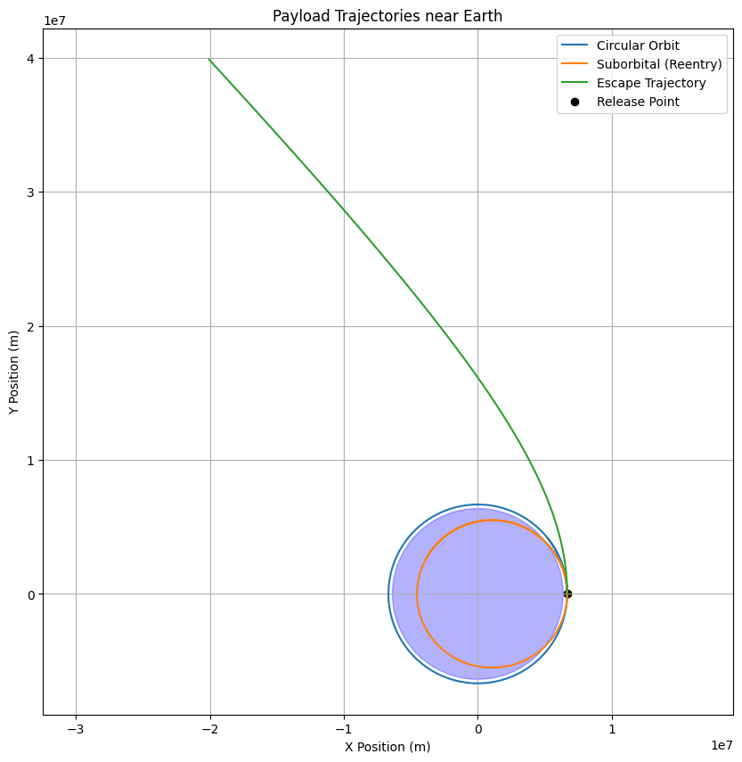

Problem 3
Trajectories of a Freely Released Payload Near Earth
1. Introduction and Motivation
When a payload is released from a moving rocket near Earth, its subsequent path depends on its initial position, velocity, and the gravitational pull of Earth. The possible trajectories include:
- Elliptical orbits (including circular),
- Parabolic trajectories (escape at exactly escape velocity),
- Hyperbolic trajectories (escape with velocity greater than escape velocity),
- Suborbital (ballistic) trajectories leading to reentry.
Understanding these paths is crucial for:
- Satellite deployment,
- Controlled reentry of space vehicles,
- Planning interplanetary missions.
2. Theoretical Background
Newton’s Law of Universal Gravitation
The gravitational acceleration experienced by the payload at position \(\mathbf{r}\) relative to Earth's center is:
where:
- \(G\) = gravitational constant,
- \(M\) = mass of Earth,
- \(\mathbf{r}\) = position vector of the payload relative to Earth’s center.
Orbital Energy and Trajectory Types
Total specific mechanical energy \(\varepsilon\) of the payload (per unit mass) determines trajectory type:
- \(\varepsilon < 0\): Elliptical orbit (closed),
- \(\varepsilon = 0\): Parabolic trajectory (critical escape),
- \(\varepsilon > 0\): Hyperbolic trajectory (unbound escape).
Orbital Elements (Optional)
From initial \(\mathbf{r}\) and velocity \(\mathbf{v}\), orbital parameters such as semi-major axis, eccentricity, and inclination can be derived, but for simulation we focus on trajectory integration.
3. Numerical Simulation Approach
Equations of Motion (2D simplification)
We model the payload’s motion in the plane:
Numerical Integration Method
Use numerical ODE solvers like Runge-Kutta (RK4 or RK45) to integrate position and velocity over time, given initial conditions:
- Initial position vector \(\mathbf{r}_0\),
- Initial velocity vector \(\mathbf{v}_0\).
4. Python Implementation
import numpy as np
import matplotlib.pyplot as plt
from scipy.integrate import solve_ivp
# Constants
G = 6.67430e-11 # m^3 kg^-1 s^-2
M_earth = 5.972e24 # kg
R_earth = 6.371e6 # m
def gravity_ode(t, y):
x, y_pos, vx, vy = y
r = np.sqrt(x**2 + y_pos**2)
ax = -G * M_earth * x / r**3
ay = -G * M_earth * y_pos / r**3
return [vx, vy, ax, ay]
def simulate_trajectory(r0, v0, t_span, max_step=1):
y0 = [r0[0], r0[1], v0[0], v0[1]]
sol = solve_ivp(gravity_ode, t_span, y0, max_step=max_step, rtol=1e-8, atol=1e-8)
return sol
# Example Initial Conditions:
# Payload released 300 km above Earth surface (circular orbit altitude)
altitude = 300e3 # 300 km
r0_mag = R_earth + altitude
r0 = np.array([r0_mag, 0]) # Starting on x-axis
# Circular orbital velocity at altitude:
v_circ = np.sqrt(G * M_earth / r0_mag)
v0_circular = np.array([0, v_circ]) # Velocity perpendicular to radius vector
# Slightly less velocity for suborbital trajectory (will reenter)
v0_suborbital = v0_circular * 0.9
# Greater than escape velocity for hyperbolic trajectory
v_escape = np.sqrt(2 * G * M_earth / r0_mag)
v0_escape = np.array([0, v_escape * 1.1])
# Simulate all three cases
t_span = (0, 6000) # seconds (about 1.7 hours)
sol_circular = simulate_trajectory(r0, v0_circular, t_span)
sol_suborbital = simulate_trajectory(r0, v0_suborbital, t_span)
sol_escape = simulate_trajectory(r0, v0_escape, t_span)
# Plot trajectories
plt.figure(figsize=(10,10))
# Earth for reference
earth = plt.Circle((0,0), R_earth, color='blue', alpha=0.3)
plt.gca().add_artist(earth)
plt.plot(sol_circular.y[0], sol_circular.y[1], label='Circular Orbit')
plt.plot(sol_suborbital.y[0], sol_suborbital.y[1], label='Suborbital (Reentry)')
plt.plot(sol_escape.y[0], sol_escape.y[1], label='Escape Trajectory')
plt.scatter([r0[0]], [r0[1]], color='black', label='Release Point')
plt.xlabel('X Position (m)')
plt.ylabel('Y Position (m)')
plt.title('Payload Trajectories near Earth')
plt.legend()
plt.axis('equal')
plt.grid(True)
plt.show()

5. Explanation of Results
- Circular Orbit: The payload velocity matches the circular orbital velocity, maintaining a stable orbit.
- Suborbital: Velocity is insufficient to stay in orbit; the payload follows a ballistic trajectory and reenters the atmosphere.
- Escape Trajectory: Velocity exceeds escape velocity; the payload follows a hyperbolic path, leaving Earth’s gravitational influence.
6. Applications
- Satellite Deployment: Ensuring the payload reaches appropriate orbit velocity.
- Reentry Vehicles: Planning controlled descent paths.
- Interplanetary Missions: Releasing payloads at escape velocity to begin transfer orbits.
7. Extensions and Further Work
- 3D Trajectory Simulation: Include inclination and full 3D vector initial conditions.
- Atmospheric Drag: Add drag forces for realistic reentry simulation.
- Non-uniform Gravity: Model Earth’s oblateness or gravitational anomalies.
- Multi-body Effects: Consider Moon and Sun gravity influences.
8. Summary
- Derived motion equations for a payload near Earth.
- Explained trajectory types via total energy.
- Developed a Python simulation of orbital, suborbital, and escape trajectories.
- Visualized the different paths, highlighting mission-relevant cases.